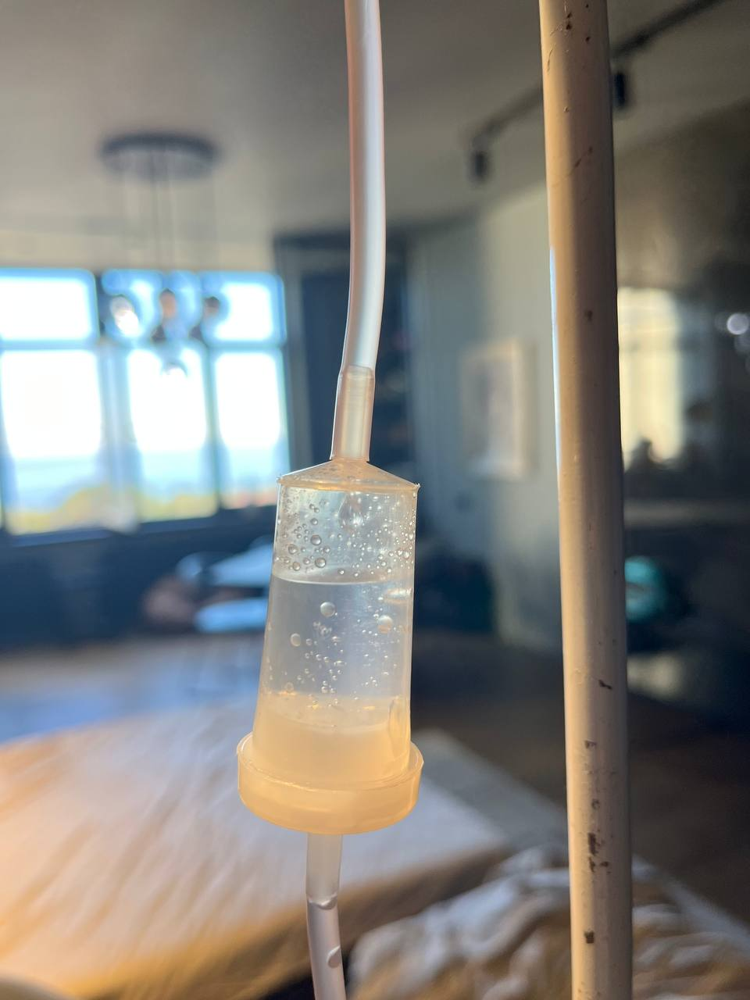

+380(97) 369 76
65
+380(97) 369 76
65Вывод из запоя на дому Харьков
Umbrella-Plus Безопасная Наркология
Работаем в Одессе, Киеве, Львове, Харькове, Днепре, Запорожье, Черноморске


Бесплатная консультация, работаем круглосуточно 24/7
Umbrella-Plus Безопасная Наркология
Работаем в Одессе, Киеве, Львове, Харькове, Днепре, Запорожье, Черноморске
Вывод из запоя на дому – это комплекс медицинских процедур, направленных на лечение алкогольной зависимости с помощью капельницы от алкоголя, проводимых непосредственно на дому у пациента. В Харькове эта процедура пользуется популярностью, поскольку позволяет эффективно снять алкогольную интоксикацию и купировать патологическую тягу к спиртному, тем самым выводя пациента из запоя в комфортной домашней обстановке.
Вывести из запоя дома можно самостоятельно или, что гораздо предпочтительнее и безопаснее, вызвав квалифицированного врача-нарколога. Запой – это бесконтрольное употребление алкоголя, которое несет потенциальную угрозу для здоровья и жизни зависимого человека. Врач-нарколог поможет безопасно прекратить прием спиртного и сделает вывод из запоя максимально мягким и плавным для состояния пациента.
Прокапаться от алкоголя на дому в Харькове – это услуга, которую предоставляет квалифицированный врач-нарколог с опытом работы в реанимации или скорой медицинской помощи. Любой запой требует индивидуального, специфического и комплексного подхода к лечению с использованием препаратов для детоксикационной и седативной терапии. Прокапаться от алкоголя на дому возможно только в тех случаях, когда состояние пациента это позволяет. Если тяжесть запоя представляет потенциальную угрозу для жизни пациента, врач-нарколог организует его госпитализацию в наркологическое или реанимационное отделение.
Выведение из запоя на дому – это комплексный курс лечения алкогольной зависимости с применением капельницы от алкоголя. В сравнении с таблетированным лечением или народными методами, этот метод имеет высокую эффективность и гарантирует плавный и безопасный выход из запоя. Выведение из запоя на дому требует от врача высокого уровня квалификации и понимания полной картины происходящих в организме пациента процессов.
Выведение из запоя на дому в Харькове включает в себя три основных этапа:
Цена на вывод из запоя на дому в Харькове начинается от 1699 грн и может варьироваться в зависимости от длительности и тяжести алкогольной интоксикации.
| Все Услуги | UmbrellaPlus | Харьков | Цена |
|---|---|
| Лечение алкоголизма Харьков | От 1699 грн |
| Капельница от алкоголя Харьков | От 1699 грн |
| Капельница от алкоголя на дому Харьков | От 1999 грн |
| Вывод из запоя Харьков | От 1699 грн |
| Вывод из запоя на дому Харьков | От 1999 грн |
| Лечение пивного алкоголизма Харьков | От 1699 грн |
| Лечение женского алкоголизм Харьков | От 1699 грн |
| Кодирование от алкоголизма Харьков | От 3999 грн |
| Кодирование от алкоголизма укол Дисульфирам | От 3999 грн |
| Кодирование от алкоголизма укол Эспераль | От 5999 грн |
| Подшивка от алкоголя Харьков | От 9999 грн |
Классический состав капельницы для вывода из запоя на дому может включать:
Прокапаться от алкоголя на дому – это значит вызвать врача-нарколога для проведения инфузионной терапии (капельницы) с целью снятия алкогольной интоксикации. Это проверенный и эффективный метод лечения запоя или похмелья. Качественно провести процедуру может только врач-нарколог, обладающий необходимыми навыками и опытом. Прокапаться от алкоголя на дому возможно, если состояние пациента стабильно и не имеет серьезных медицинских противопоказаний.
Капельница от похмелья на дому имеет несколько иной состав и применяется в случаях, когда употребление спиртного не превышает двух дней. Она обладает выраженным детоксикационным эффектом, насыщает организм витаминами и аминокислотами, а также восстанавливает функцию печени с помощью гепатопротекторов, антиоксидантов и коферментов. Капельница от похмелья – это оптимальный выбор для лечения симптомов острой алкогольной интоксикации и наиболее эффективный и безопасный способ оказания помощи пациенту, злоупотребившему алкоголем накануне. Важно отметить, что капельницу от похмелья не используют для лечения длительной хронической алкогольной интоксикации; в таких случаях применяется капельница от запоя, на дому или в стационаре.
Выход из запоя – это процесс прекращения пациентом бесконтрольного употребления алкоголя, часто с целью “опохмелиться”. Самостоятельный выход из запоя может быть опасен и привести к серьезным осложнениям со стороны сердечно-сосудистой и нервной системы. Для безопасного и эффективного выхода из запоя на дому или в стационаре врачи-наркологи используют комплексную детоксикационную терапию, а также психотерапию для формирования отвращения к алкоголю.
Чтобы вызвать врача-нарколога для консультации или проведения капельницы от алкогольной интоксикации и вывода из запоя в Харькове, позвоните по номеру 050-021-69-57. Приезд нарколога – это анонимный и безопасный метод лечения любой наркологической проблемы. Врач приезжает в течение часа на обычной машине, без опознавательных знаков, с необходимым набором медикаментов для лечения алкогольной интоксикации и оказания неотложной помощи.
Для самостоятельного выхода из запоя необходимо полностью прекратить употребление спиртного, пить много щелочной воды, принимать сорбенты и аминокислоты. Однако, если самостоятельно выйти из запоя не удается, необходимо обратиться за медицинской помощью к врачу-наркологу для проведения капельницы от алкоголя на дому или в стационаре. Для консультации с врачом-наркологом в Харькове позвоните по номеру 050-021-69-57.
Основным противопоказанием к выводу из запоя на дому является тяжесть состояния пациента.
К другим противопоказаниям относятся:
К народным методам облегчения состояния при выводе из запоя можно отнести прием сорбентов (активированный уголь, Сорбекс, белый уголь), аминокислот (Гепаргин, Бетаргин), успокоительных (пустырник, валерьянка), а также употребление большого количества щелочной воды.
Помните, что любое запойное состояние потенциально опасно для здоровья. Не занимайтесь самолечением; обратитесь за квалифицированной наркологической помощью к врачу-наркологу. Для вызова врача-нарколога в Харькове позвоните по номеру 050-021-69-57.
Готовы сделать первый шаг к выздоровлению? Свяжитесь с нами для получения профессиональной помощи.
Анонимно

"Никакими усилиями самостоятельно я не смогла преодолеть запой, и наступала ломка, сопровождаемая повышенным давлением и пульсом. Тогда я решила обратиться за помощью в клинику. Врачи оказали мне неоценимую поддержку! Уже прошел месяц, и я не только не употребляю алкоголь, но даже не испытываю к нему желания!"
Анонимно
"Могу с уверенностью порекомендовать данный центр для тех, кто ищет помощь при выводе из запоя. Я неоднократно обращался к ним и могу сказать, что цена соответствует качеству услуг. После проведения капельницы в клинике, вся тяга к алкоголю проходит, и я чувствую себя гораздо лучше. Это действительно эффективный метод, и я благодарен клинике за их профессионализм и заботу!"
Анонимно
"Я очень благодарен за то, что вы помогли мне разобраться с моей проблемой алкоголизма и найти ее решение. Давно осознавал, что без помощи профессионалов я не справлюсь, и я не ошибся, выбрав ваш центр Амбрелла. Здесь действительно предоставляется профессиональная помощь, которая оказалась для меня реальным спасением. Огромное спасибо за вашу поддержку и заботу!"
Анонимно
"Неоднократно я пытался бросить алкоголь самостоятельно, но каждый раз уговаривал себя продолжать. Я сначала ограничивался одной бутылкой в день, потом двумя, и в итоге вновь попадал в запой. Но в итоге, я смог прекратить употребление алкоголя только после того, как обратился в центр Амбрелла и заказал у них услугу вывода из запоя. Уже не пью 3 месяца и удалось полностью восстановиться. Благодарю врача который меня вел - Алексея Валерьевича"
Анонимно
"Здравствуйте! Я хотел бы выразить свою искреннюю благодарность клинике за быстрое и профессиональное освобождение моего мужа пивного рабства! Ранее у меня уже не было никаких надежд на его выздоровление. Однако, благодаря вашим перспективным методам лечения, мы теперь идем к полному отказу от алкоголя. Вы дали нам новую надежду и оказали неоценимую помощь! Спасибо вам за все!"
Анонимно
"Я долгое время страдал от запоев и не мог справиться с этой проблемой. Однако, когда я обратился в этот центр, они быстро помогли мне вернуться на ноги, и самое главное - предоставили мне возможность не возвращаться к запоям. Уже почти полгода я не испытываю запоев! Это для меня настоящее чудо, я никогда не думал, что смогу так преодолеть свои проблемы. Большое спасибо центру Амбрелла!"
Анонимно
"Благодарю ваш центр Амбрелла за оперативное и высококачественное лечение! Женский алкоголизм - это настоящее горе, с которым невозможно справиться в одиночку. Я уже потеряла надежду, но благодаря вашей помощи, она вернулась ко мне! Отдельная благодарность врачу Станиславу Вячеславовичу, а также благодарность Богу за то, что он послал мне такое чудо как ваша центр! Спасибо вам всем!"
Анонимно
"Хочу выразить благодарность врачу Владиславу Алексеевичу за то, что вы избавили меня от этого ужаса. Я уже был в отчаянии, перепробовал множество клиник и центров, но только здесь я наконец получил настоящую помощь! Алкоголь полностью разрушил меня, и если бы не ваша помощь, я, возможно, уже не был бы жив. С вами я смог вернуть себе жизнь и буду благодарен вам всегда!"
Приезд в течении 60 минут от момента поступления заявки
Наши филиалы есть во всех больших городах Украины.
Мы оказываем профессиональную доказательную медицинскую помощь. Гарантией является наше имя.
Номер телефона:
+380 (97) 369 76 65
+380 (50) 021 69 57
Адрес главного офиса: г. Харьков ул. Сумская 47
Офис вашего города нужно
уточнить
Работаем в: Одессе, Киеве, Львове, Харькове, Днепре,
Запорожье
Telegram: t.me/umbrellaplus
График работы: Круглосуточно